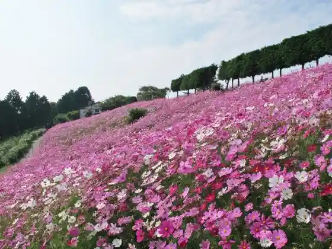
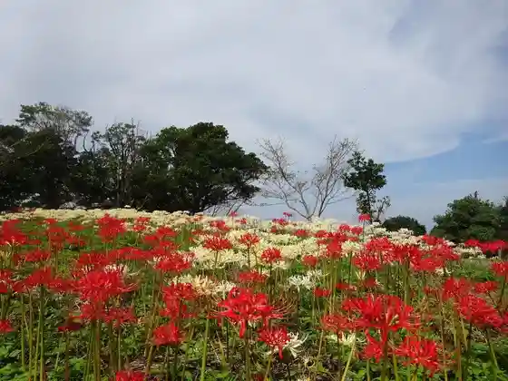
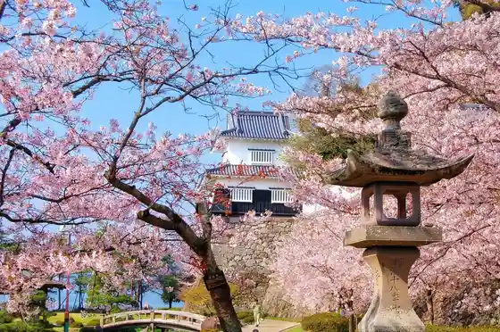
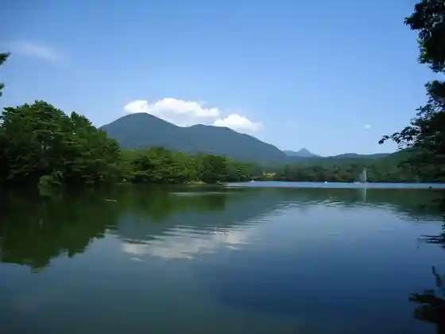

Garasu no Beach
Omura, Nagasaki · Official / source link
Omata Farm no no Mi
Omura, Nagasaki · 0957-55-4588 · Official / source link

Hachimaki Yama Tembo Tokoro
Omura, Nagasaki · 0957-53-4111 · Official / source link

Omura Park (Ku Shima Castle Ruins)
Omura, Nagasaki · 0957-53-4111 · Official / source link

Nodake Mizumi Park
Omura, Nagasaki · 0957-55-8254 · Official / source link

Tensho Ken'o Shonen Shisetsu Kensho Yuki Zo
Omura, Nagasaki · 0957-53-4111 · Official / source link
Nagasaki Airport
Omura, Nagasaki · Official / source link
Matsubara Beach
Omura, Nagasaki · 0957-55-8675 · Official / source link
Kyu Kusumoto Masataka Residence
Omura, Nagasaki · 0957-52-9885 · Official / source link
Kuroki Gorge
Omura, Nagasaki · 0957-53-4111 · Official / source link
Omura Ekimae Tourist Information
Omura, Nagasaki · 0957-54-1061 · Official / source link
Botoresu Omura
Omura, Nagasaki · 0957-54-4111 · Official / source link
Urami no Taki Shizen Hanazono
Omura, Nagasaki · 0957-55-8501 · Official / source link
Mirai on Library
Omura, Nagasaki · 0957-48-7700 · Official / source link
Dai 21 Kaigun Koku Sho (Kokusho)
Omura, Nagasaki · 0957-53-4111 · Official / source link
Omura Yume Farm Shushu
Omura, Nagasaki · Official / source link
Kyuen Yu Tera Garden (Kuni Shitei Meisho)
Omura, Nagasaki · 0957-53-4111 · Official / source link
Foresutoadobencha Omura Nagasaki
Omura, Nagasaki · 080-1403-0552 · Official / source link
Komyunitei Park Gurun Omura
Omura, Nagasaki · 0957-54-1011 · Official / source link
Tara Gaku Okitsune no Kamisori
Omura, Nagasaki · 0957-53-4111 · Official / source link
Ku Shima Joka (Omura Joka Go Koji) Buke Yashiki Tori
Omura, Nagasaki · 0957-53-4111 · Official / source link
Honkyo Tera Omura Hanshu Omura Ie Hakasho (Kuni Shitei Historic Site)
Omura, Nagasaki · 0957-53-4111 · Official / source link
Kotohira Sukai Park
Omura, Nagasaki · 0957-55-4641 · Official / source link
Kaya Se Daimyo Sugi
Omura, Nagasaki · 0957-53-4111 · Official / source link
Omura Shrine no Omurazakura (Kuni Shitei Tennenkinembutsu)
Omura, Nagasaki · 0957-53-4111 · Official / source link
Masuragahara Tembo Park
Omura, Nagasaki · 0957-53-4111 · Official / source link
Don Ushiyama
Omura, Nagasaki · Official / source link
Saishi Wakare no Ishi
Omura, Nagasaki · 0957-53-4111 · Official / source link